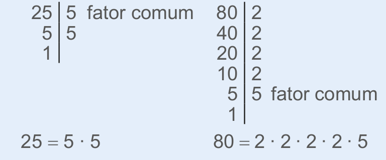
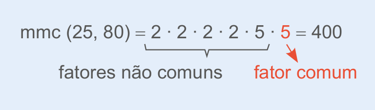
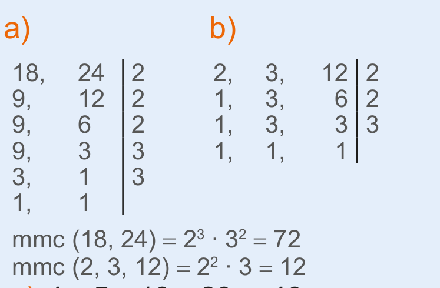
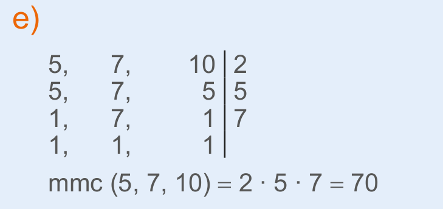
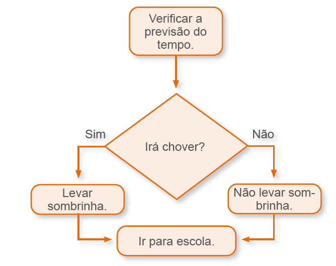
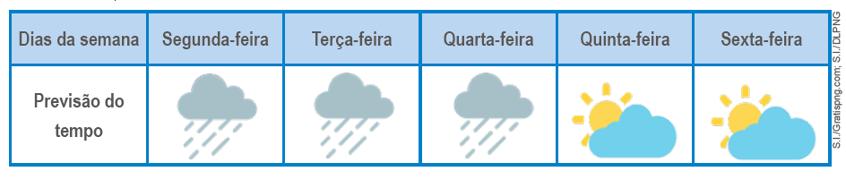
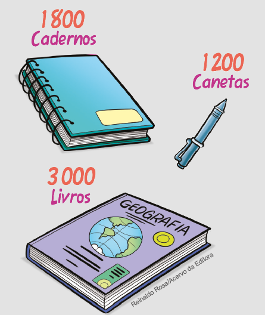

Neste capítulo, apresentamos um procedimento para se determinar o mínimo múltiplo comum entre dois números. Esse procedimento não é o único que nos permite determinar o mmc entre dois números naturais. Veja a seguir outro procedimento. Caso ache interessante, pode ser apresentado aos alunos.
1. Decomposição em fatores primos.
Vamos determinar o mmc entre 25 e 80.
O mmc entre 25 e 80 será o produto de todos os fatores comuns e não comuns.
CAPÍTULO 4 - Mínimo múltiplo comum (mmc)
Reinaldo Rosa/Acervo da Editora
Mariana está tomando três medicamentos que seu médico receitou. O primeiro deve ser tomado de 4 em 4 horas, o segundo de 6 em 6 horas e o terceiro de 12 em 12 horas. Ela iniciou o tratamento numa segunda-feira, tomando os três remédios às 8 horas da manhã.
1. Troque ideias com um colega e expliquem como Mariana poderá saber em qual horário ela irá tomar os três medicamentos juntos, novamente. O horário em que ela tomará os 3 medicamentos juntos novamente deverá ser o menor múltiplo comum de 4, 6 e 12.
Agora veja como podemos descobrir esse horário.
Inicialmente precisamos encontrar os múltiplos de 4, 6 e 12.
Múltiplos de 4: 0, 4, 8, 12, 16, 20, 24, ...
Múltiplos de 6: 0, 6, 12, 18, 24, 30, ...
Múltiplos de 12: 0, 12, 24, 36, 48, ...
Note que os múltiplos comuns até 30 de 4, 6 e 12 são 0, 12 e 24. Destes, o menor múltiplo comum, diferente de 0 (zero), é 12. Ele é chamado de mínimo múltiplo comum e é representado da seguinte forma:
mmc (4, 6, 12) = 12
Portanto, Mariana deverá tomar os três medicamentos juntos somente depois de 12 horas, ou seja, às 20 horas.
Podemos calcular o mmc entre dois ou mais números naturais por meio da decomposição simultânea em fatores primos. Observe: Clique aqui para ver o passo a passo
mmc (4, 6, 12) = 2 ∙ 2 ∙ 3 = 2² ∙ 3 = 12
152
Encontre soluções
Atividade 1
Para que os dois ônibus saiam no mesmo horário, há ne- cessidade de que a hora de saída seja múltipla de 2 e 3, ou seja, os ônibus sempre partirão juntos de 6 em 6 horas.
Depois de 6 horas. Será meio-dia.
Atividade 2
Para que os funcionários saiam juntos no mesmo dia, há necessidade de se saber o mínimo múltiplo comum entre 12, 15 e 20, ou seja, 60. Portanto, eles saem no mesmo dia de 60 em 60 dias.
Atividade 5
Como os atletas saíram jun- tos, eles irão se encontrar nova- mente após 180 minutos, que corresponde ao mínimo múltiplo comum entre 45 e 60.
180 minutos, ou seja, 3 horas.
Atividade 6
Nesta atividade, espera-se que os alunos percebam que quando dois ou mais números são primos entre si, o mínimo múltiplo comum será o produto entre eles, e que quando dois ou mais números são múltiplos en- tre si, o mínimo múltiplo comum será o maior número.
Atividade 7
c) 4, 5, 10, 20 e 40: como 40 é o maior múltiplo comum, o mínimo múltiplo comum é igual a 40.
d) 10, 45, e 180: como 180 é o maior múltiplo comum, o mínimo múltiplo comum é igual a 180.
f) 11, 13 e 3: como todos os números são primos entre si, o mínimo múltiplo comum é o produto entre eles, ou seja, 11 ∙ 13 ∙ 3 = 429.
ENCONTRE SOLUÇÕES

1. Dois ônibus de empresas diferentes partem da mesma rodoviária com destino à mesma cidade. Um deles tem saídas de 2 em 2 horas e o outro, de 3 em 3 horas. O primeiro horário de saída desses ônibus é às 6 horas da manhã. Depois de quantas horas os dois ônibus sairão no mesmo horário? Que horas serão? Depois de 6 horas. Será meio-dia.
2. Três funcionários de uma empresa viajam regularmente. O primeiro viaja de 12 em 12 dias; o segundo, de 15 em 15 dias; e o terceiro, de 20 em 20 dias. Neste mês, coincidiu de eles saírem para viajar no mesmo dia. Daqui a quantos dias eles sairão novamente no mesmo dia? 60 dias.
3. Observe os pares de números abaixo.
a) Calcule o mmc entre eles. mmc (12, 24) = 24; mmc (5, 40) = 40; mmc (3, 27) = 27.
b) O que você pode observar sobre o mmc entre dois números distintos, em que um deles é múltiplo do outro? O mmc será o maior número.
4. Observe os pares de números abaixo.
a) Calcule o mdc entre eles. mdc (4, 25) = 1; mdc (7, 9) = 1; mdc (3, 5) = 1.
b) Quando o mdc entre dois números naturais for igual a 1, eles são chamados de números primos entre si. Os pares de números são primos entre si? Sim.
c) Calcule o mmc entre eles. mmc (4, 25) = 100; mmc (7, 9) = 63; mmc (3, 5) = 15.
d) O que podemos afirmar sobre o mmc entre dois números primos entre si? O mmc é o produto entre eles.
5. Um atleta dá uma volta em um parque em 45 minutos. Outro corredor leva 60 minutos para percorrer o mesmo percurso. Se os dois iniciarem a corrida juntos, após quanto tempo vão se encontrar novamente? 3 horas.
6. Calcule mentalmente:
a) mmc (3, 7) 21
b) mmc (6, 18) 18
c) mmc (2, 3, 5) 30
d) mmc (9, 11) 99
e) mmc (12, 36) 36
f) mmc (3, 6, 24) 24
7. Calcule o mínimo múltiplo comum entre os números a seguir.
a) 18 e 24 72
b) 2, 3 e 12 12
c) 4, 5, 10, 20 e 40 40
d) 10, 45 e 180 180
e) 5, 7 e 10 70
f) 3, 11 e 13 429
8. Gabriel, Marcos e Danilo são médicos em um hospital. Gabriel faz plantão a cada 4 dias. Marcos faz plantão a cada 5 dias e Danilo, a cada 6 dias. A cada quantos meses os três médicos fazem plantão juntos? 60 dias = 2 meses.
9. Observe a quantidade de alunos que há em sua turma. Elabore um problema envolvendo o conceito de múltiplos para uma situação que você irá criar. Em seguida, troque seu caderno com um colega para que ele resolva o problema elaborado por você. Juntos, verifiquem se os problemas resolvidos estão corretos. Resposta pessoal.

153
Neste momento, ao apresentarmos um fluxograma para representar uma informação, estamos desenvolvendo a habilidade EF06MA34 que prevê a interpretação e desenvolvimento de fluxogramas simples, identifi- cando as relações entre os objetos representados.
Esta linguagem é relativamente recente para os nossos alunos, por isto a importância deste modelo de atividade, onde eles irão precisar refletir sobre as ações, qual caminho seguir ou qual decisão tomar.
Durante a realização da atividade pergunte aos alunos se haveria mais alguma possibilidade de tomada de decisão a partir das informações que são mostradas no fluxograma e na tabela. Ao tomar decisões a partir das informações fornecidas, os alunos precisam se preocupar em analisar os dados fornecidos.
Estimule-os a criar outros fluxogramas a partir de situações do cotidiano.
Na atividade 2, os alunos devem concluir que quando o expoente de uma potência é zero, com base diferente de zero, ou quando o expoente de uma potência é 1 é possível determinar de forma rápida o seu resultado, nos demais casos podemos utilizar a multiplicação.
PROBABILIDADE E ESTATÍSTICA
► Representando informações
Manoela vai para a escola, de segunda-feira a sexta-feira, a pé. A sua mãe representou por meio de um esquema o que ela deve lembrar de levar na mo-chila, além do seu material escolar, de acordo com a previsão do tempo.
No domingo a noite, Manoela fez uma consulta na previsão do tempo para a semana, observe:
1. De acordo com a previsão do tempo, em quais dias da semana Manoela deverá levar sombrinha? Registrem a resposta em seus cadernos.
Segunda-feira, terça-feira e quarta-feira.
2. Troque ideias com um colega e, em seus cadernos, construam um fluxograma que permita verificar quando devemos transformar uma potencia-ção em uma multiplicação de fatores iguais, para se efetuar o cálculo ou quando a resposta é imediata. Resposta pessoal.
3. Troque ideias com um colega e, em seus cadernos, elaborem um fluxograma a partir de informações que vocês queiram transmitir para a turma ou outra pessoa da escolha de vocês. Em seguida, apresentem aos colegas o fluxograma criado. Resposta pessoal.
154
Relembre
Atividade 1
a) É falsa, pois 2 é número primo e não é ímpar.
b) Falsa, pois 39 é divisível por 1, 3, 13 e 39, portanto não é primo.
c) Verdadeira. Os números primos entre 20 e 30 são 23 e 29.
d) Verdadeira. O único número par que é primo é o número 2.
e) Falsa. 5 é divisor de 25.
f) Verdadeira.
g) Falsa. 49 é divisível por 1, 7 e 49.
h) Falsa. 1 é divisor de qualquer número.
Atividade 2
Divisores de 24: 1, 2, 3, 4, 6, 8, 12, 24.
Divisores de 36: 1, 2, 3, 4, 6, 9, 12, 18, 36.
Divisores comuns: 1, 2, 3, 4, 6, 12.
Atividade 6
Para saber depois de quantos dias os filhos visitarão o pai novamente, precisamos encontrar o mmc entre 15, 20 e 25, ou seja, mmc (15, 20, 25) = 300.
Daqui a 300 dias.
Atividade 7
a) Vamos calcular o máximo divisor comum entre 1 800, 1 200 e 3 000 para saber a quantidade de alunos, tendo em vista que no enunciado é dito que há mais de 400 alunos matriculados nesse colégio. O mdc entre 1 800, 1 200 e 3 000 é igual a 600.
Atividade 8
No número 72 1▲8, para que seja divisível por 3, as possibilidades para substituir o ▲ são 3, 6 e 9. O único algarismo que torna o número divisível por 8 é o algarismo 6.
RELEMBRE
1. Leia as alternativas a seguir e verifique se são falsas ou verdadeiras. No caderno, explique as falsas.
a) Todos os números primos são ímpares. F
b) O número 39 é primo. F
c) Entre 20 e 30, existem dois números primos. V
d) Existe apenas um número par que é primo. V
e) 5 é múltiplo de 25. F
f) 8 é divisor de 56. V
g) 49 é divisível por 6. F
h) 1 é múltiplo de qualquer número. F
2. Em seu caderno, verifique quais são os divisores comuns entre 24 e 36?
17 = 289 289 − 1 = 288 288 é divisível por 8.3. Subtraindo 1 unidade do quadrado do número 17, encontramos:
a) um número divisível por 5.
b) um número divisível por 13.
c) um número divisível por 8.
d) um número divisível por 21.
4. Um número formado por três algarismos é divisível por 2 e 3 ao mesmo tempo. O algarismo das centenas é 6 e o algarismo das dezenas é 8. Qual é o algarismo das unidades simples? 4
5. (Saresp) Indique, dentre as opções abaixo, aquela que apresenta todas as afirmações corretas.
a) 12 é múltiplo de 2, de 3 e de 9.
b) 2, 3 e 6 são divisores de 12.
c) 2, 3 e 7 são divisores de 7.
d) 12 é múltiplo de 24 e de 39.
6. Um pai tem três filhos. O filho mais velho o visita de 15 em 15 dias. O mais novo costuma visitá-lo de 20 em 20 dias e o do meio, de 25 em 25 dias. Hoje, os três filhos, juntos, estão visitando o pai. Daqui a quantos dias os três, juntos, visitarão novamente o pai? 300 dias.
7. No colégio em que Ricardo estuda, há mais de 400 alunos matriculados. Entre eles, serão distribuídos:
a) Cada aluno deverá receber a mesma quantidade de material e não poderá sobrar material. Qual o número de alunos que estão matriculados nesse colégio? 600 dias.
b) Quantos cadernos, canetas e livros receberá cada aluno? 3 cadernos, 2 canetas e 5 livros.
8. O número 72 1▲8 é divisível por 3 e por 8. Qual é o algarismo representado pelo símbolo ▲, para que a afirmação esteja correta? 8
155